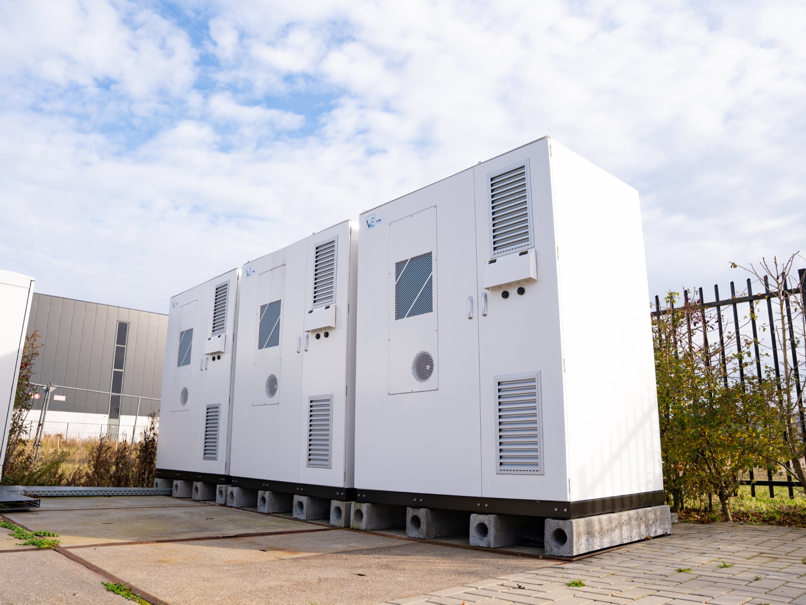

Losse panelen, een losse batterij, losse laadpalen — daar staan de meeste locaties. Een microgrid verbindt en stuurt dezelfde assets als één lokale energiecentrale die zelfstandig balanceert.
Zonder onderlinge sturing draaien assets langs elkaar heen. De zon levert terwijl de batterij niet bijspringt; laadpalen pieken zonder buffer. Het geheel telt niet op — en de waarde blijft liggen.
Elk apparaat doet zijn eigen ding. Opwek, opslag en laden reageren niet op elkaar.
Waarde versnipperdLaadpalen en processen pieken terwijl de batterij niet weet dat ze moet bijspringen.
Aansluiting onder drukLosse installaties zijn lastig uit te breiden of te koppelen aan andere locaties.
Groei stoktIn een microgrid worden de assets verbonden en centraal aangestuurd, zodat ze als één lokale energiecentrale functioneren. Zon, opslag en laadinfra werken samen — het systeem balanceert zelfstandig binnen uw operationele grenzen.
— Vibe Energy · positie
Vier stappen waarin afzonderlijke installaties één zelfsturende energiecentrale worden.
Zon, batterij en laadpalen staan er al — maar ieder voor zich.
De assets worden gekoppeld tot één meet- en stuurbaar geheel.
Het brein balanceert opwek, opslag en verbruik realtime binnen uw grenzen.
Het geheel functioneert als één zelfsturend systeem — schaalbaar naar Energy Hubs.
Door pieken te bufferen en te verdelen ontstaat ruimte op de bestaande aansluiting — zonder verzwaring.
Virtuele netverzwaringMeer eigen regie over wanneer u produceert, opslaat en verbruikt — minder afhankelijk van het net.
Eigen sturingEén microgrid is de bouwsteen; koppel locaties en er ontstaat een Energy Hub.
Basis voor Energy HubsOf uw locatie klaar is voor een microgrid, bepalen we in een quickscan.
Stel uw vraagEén gesprek waarin we techniek, capaciteit en exploitatie samenbrengen — met een eerste beeld van wat een microgrid op uw locatie kan betekenen.